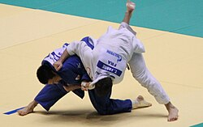

Judo
Judo, dżudo[1] (jap. 柔道 jūdō; „łagodna droga”) – sztuka walki stworzona w Japonii jako sport przez Jigorō Kanō (1860–1938) z jūjutsu. Judo zostało docenione jako metoda ćwiczeń fizycznych, treningu moralnego i samoobrony

- Początki Judo
- Judo, którego twórcą jest Jigorō Kanō, wywodzi się od sztuki samoobrony o nazwie jū-jutsu, która ukształtowała się w okresie Edo (1603–1868). Umiejętność ta była wykorzystywana m.in. przy dokonywaniu aresztowań. Z kolei jū-jutsu wywodzi się od sechie-zumo, zapasów organizowanych w czasie przyjęć dworskich w okresach: Nara (710–794) i Heian (794–1185). Chiński znak 柔 czytany tu po sinojapońsku "jū"[3], a po chińsku "róu"[4] pochodzi z fragmentu starożytnego, chińskiego traktatu wojskowego 黄石公三略, Huáng Shígōng Sān Lüè (ang. „Three Strategies of Huang Shigong”, lit. „Three Strategies of the Duke of Yellow Rock”), który stwierdza: „Miękkość dobrze kontroluje twardość”[2]. Jigorō Kanō urodził się w zamożnej rodzinie w wiosce Mikage (ob. dzielnica Kobe). Jego dziadek prowadził własną wytwórnię sake. Jednak jego ojciec – Jirōsaku Kanō (ur. jako Jirōsaku Mareshiba) – ze względu na to, że nie był najstarszym synem, nie przejął rodzinnego interesu. Zamiast tego został kapłanem shintō i jednocześnie urzędnikiem, przez co miał wystarczające możliwości, aby umieścić swojego syna na Uniwersytecie Tokijskim w 1877 roku.
- Spośród pierwszych uczniów mistrza najbardziej znani są:
-
- Yoshitsugu (Yoshiaki) Yamashita – przyszły trener prezydenta Theodore’a Roosevelta;
- Tsunejirō Tomita – ojciec Tsuneo Tomity, autora powieści o judo pt. „Sugata Sanshirō”
- Sakujirō Yokoyama – znany w swoich czasach jako „Diabeł Jokohamy”.
Ćiekawostki
W judo są stopnie uczniowskie – kyū i mistrzowskie – dan. Wcześniej nie istniały stopnie kyū w żadnej sztuce walki. System ten szybko rozpowszechnił się i został przejęty np. w karate.